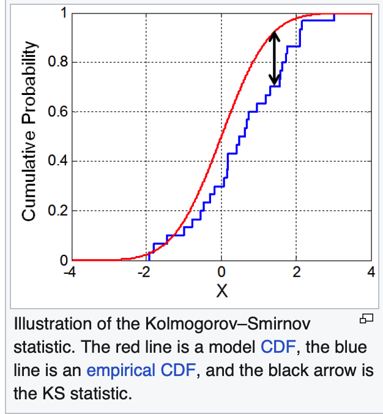
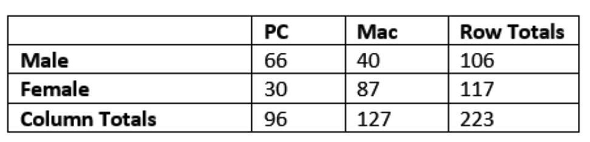

Nonparametric Statistics
There are two categories of nonparametric statistics:
procedures that do not involve/depend on parametric assumptions, and methods that do not require that the data belong to a particular parametric family of distributions.
- Kolmogorov–Smirnov (KS) Test:
The KS test compares a sample distribution to a theoretical distribution (one-sample) or compares two samples (two-sample).
It is based on the largest difference between empirical cumulative distribution functions (ECDFs).
ECDF:
\[
F_n(x) = \frac{1}{n}\sum_{i=1}^n I(X_i \le x)
\]
It can be easier to understand with a visual: .
- Two-Sample Nonparametric Tests (Mann–Whitney U / Wilcoxon Rank-Sum):
These tests compare two independent samples without assuming normality.
All observations are ranked together, and the rank sums between groups are compared.
Rank-sum statistic for sample 1:
\[
U_1 = R_1 - \frac{n_1(n_1+1)}{2}
\]
where \(R_1\) is the sum of ranks for sample 1.
The test statistic \(U\) measures how separated the ranks are between groups.
If one distribution tends to have larger values, its ranks will be larger.
-
The Mann–Whitney U statistic compares two independent samples by evaluating how often values from one group exceed values from the other.
Mean of U:
\[
\mu_U = \frac{n_1 n_2}{2}
\]
Variance of U (no ties):
\[
\sigma_U^2 = \frac{n_1 n_2 (n_1 + n_2 + 1)}{12}
\]
where
\( n_1 \) = sample size of group 1,
\( n_2 \) = sample size of group 2.
- K-Sample Tests (Kruskal–Wallis Test):
The Kruskal–Wallis is an extension of MWW rank-based testing to more than two groups.
It tests whether at least one distribution differs from the others.
- Contingency Tables:
A contingency table displays the frequency counts for two categorical variables.
These tables are analyzed using the chi-square test of independence. Here is an example of one:

Expected count:
\[
E_{ij} = \frac{(\text{row total})_i \cdot (\text{column total})_j}{\text{grand total}}
\]
Chi-square statistic:
\[
\chi^2 = \sum_{i}\sum_{j} \frac{(O_{ij} - E_{ij})^2}{E_{ij}}
\]
where \(O_{ij}\) are observed counts.
Large \(\chi^2\) values suggest association between the variables.